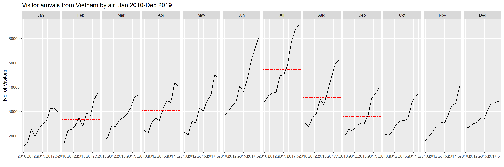
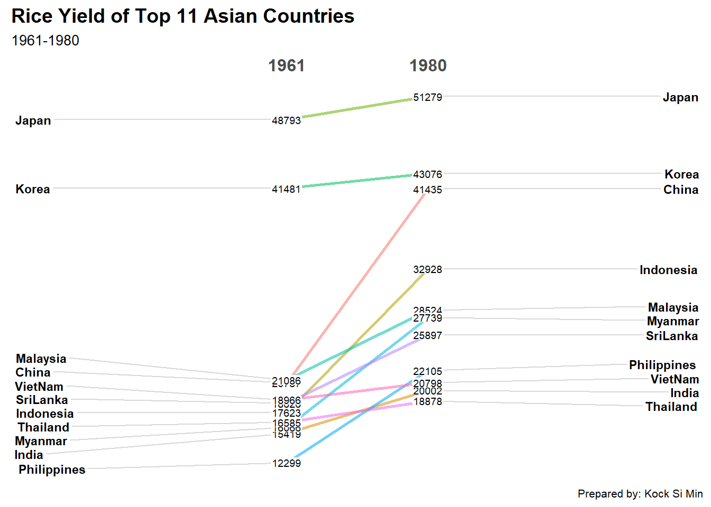

pacman::p_load(scales,viridis,lubridate,ggthemes,gridExtra,readxl,knitr,data.table,tidyverse)Hands-on Exercise 6
Visualising and Analysing Time-oriented Data
6.1 Learning Outcomes
By the end of this hands-on exercise, I would have created the following data visualisations by using R packages:
a calender heatmap by using ggplot2 functions,
a cycle plot by using ggplot2 function,
a slopegraph
a horizon chart
6.2 Installing R Packages
6.3 Plotting Calendar Heatmap
In this section, I will plot a calender heatmap programmatically by using the ggplot2 package.

By the end of this section, I would have:
plotted a calender heatmap by using ggplot2 functions and extension,
wrote a function using R programming,
derived specific date and time-related fields by using base R and lubridate packages
performed data preparation by using tidyr and dplyr packages.
6.3.1 The Data
For the purpose of this hands-on exercise, the eventlog.csv file will be used. This data file consists of 199,999 rows of time-series cyber attack records by country.
6.3.2 Importing the data
The code chunk below imports the eventlog.csv file into the R environment and saves it as a dataframe named attacks.
attacks <- read_csv("data/eventlog.csv")6.3.3 Examining the data structure
It is always a good practice to examine the imported data frame before further analysis is performed.
kable() can be used to review the structure of the imported data frame.
kable(head(attacks))| timestamp | source_country | tz |
|---|---|---|
| 2015-03-12 15:59:16 | CN | Asia/Shanghai |
| 2015-03-12 16:00:48 | FR | Europe/Paris |
| 2015-03-12 16:02:26 | CN | Asia/Shanghai |
| 2015-03-12 16:02:38 | US | America/Chicago |
| 2015-03-12 16:03:22 | CN | Asia/Shanghai |
| 2015-03-12 16:03:45 | CN | Asia/Shanghai |
There are three columns, namely timestamp, source_country and tz.
timestamp field stores date-time values in POSIXct format.
source_country field stores the source of the attack. It is in ISO 3166-1 alpha-2 country code.
tz field stores time zone of the source IP address.
6.4.4 Data Preparation
Step 1: Deriving weekday and hour of day fields
Before plotting the calender heatmap, we derive two new fields wkday and hour. A function is written to perform this task.
make_hr_wkday <- function(ts,sc,tz) {
real_times <- ymd_hms(ts,
tz=tz[1],
quiet = TRUE)
dt <- data.table(source_country = sc,
wkday = weekdays(real_times),
hour = hour(real_times))
return(dt)
}
Note
weekdays()is a base R function.
Step 2: Deriving the attacks tibble data frame
wkday_levels <- c('Saturday','Friday',
'Thursday','Wednesday',
'Tuesday','Monday','Sunday')
attacks <- attacks %>%
group_by(tz) %>%
do(make_hr_wkday(.$timestamp,
.$source_country,
.$tz)) %>%
ungroup() %>%
mutate(wkday = factor(
wkday, levels = wkday_levels),
hour = factor(
hour, levels = 0:23))
Note
Beside extracting the necessary data into attacks data frame, mutate() of dplyr package is used to convert wkday and hour fields into factor so they’ll be ordered when plotting.
Note
The code chunk below allows one to overcome the limitations of computer timestamp:
attacks <- attacks %>%
mutate(wkday = lubridate::wday(timestamp,
label=TRUE,
abbr=FALSE,
hour=lubridate::hour(timestamp)))Table below shows the tidy tibble table after processing:
kable(head(attacks))| tz | source_country | wkday | hour |
|---|---|---|---|
| Africa/Cairo | BG | Saturday | 20 |
| Africa/Cairo | TW | Sunday | 6 |
| Africa/Cairo | TW | Sunday | 8 |
| Africa/Cairo | CN | Sunday | 11 |
| Africa/Cairo | US | Sunday | 15 |
| Africa/Cairo | CA | Monday | 11 |
6.3.5 Building the calendar heatmaps
grouped <- attacks %>%
count(wkday,hour) %>%
ungroup() %>%
na.omit()
grouped# A tibble: 168 × 3
wkday hour n
<fct> <fct> <int>
1 Saturday 0 1081
2 Saturday 1 1053
3 Saturday 2 1088
4 Saturday 3 1130
5 Saturday 4 1183
6 Saturday 5 1226
7 Saturday 6 1163
8 Saturday 7 1128
9 Saturday 8 1083
10 Saturday 9 1077
# ℹ 158 more rowsggplot(grouped,
aes(hour,
wkday,
fill = n)) +
geom_tile(color = "white",
size = 0.1) +
theme_tufte(base_family = "Helvetica") +
coord_equal() +
scale_fill_gradient(name = "# of attacks",
low = "sky blue",
high = "dark blue") +
labs(x = NULL,
y = NULL,
title ="Attacks by weekday and time of day") +
theme(axis.ticks=element_blank(),
plot.title=element_text(hjust=0.5),
legend.title=element_text(size=8),
legend.text = element_text(size=6))
ggplot(grouped,
aes(hour,
wkday,
fill = n)) +
geom_tile(color = "white",
size = 0.1) +
coord_equal() +
scale_fill_gradient(name = "# of attacks",
low = "sky blue",
high = "dark blue") +
labs(x = NULL,
y = NULL,
title ="Attacks by weekday and time of day") +
theme(axis.ticks=element_blank(),
plot.title=element_text(hjust=0.5),
legend.title=element_text(size=8),
legend.text = element_text(size=6))
Things to learn from the code chunk
a tibble data table called grouped is derived by aggregating the attacks by wkday and hour.
a new field called n is derived by using
group_by()andcount()functions.na.omit()is used to exclude missing value.geom_tile()is used to plot tiles (grids) at each x and y position.colorandsizearguments are used to specify the border color and line size of the tiles.theme_tufte()of ggthemes package is used to remove unnecessary chart junk. A version of the code without the line is used to visualise the components of default ggplot2 that would have been included hadtheme_tufte()not been used.coord_equal()is used to ensure the plot will have an aspect ratio of 1:1.scale_fill_gradient()function is used to creates a two colour gradient (low-high).
6.3.6 Building Multiple Calendar Heatmaps
This section involves building multiple heatmaps for the top four countries with the highest number of attacks.

6.3.7 Creating data table for top 4 countries with highest number of attacks
Step 1: Deriving attack by country object
To identify the top 4 countries with the highest number of attacks, the following steps are required:
count the number of attacks by country,
calculate the percent of attacks by country, and
save the results in a tibble data frame.
attacks_by_country <- count(
attacks,source_country) %>%
mutate(percent = percent(n/sum(n))) %>%
arrange(desc(n))
attacks_by_country# A tibble: 117 × 3
source_country n percent
<chr> <int> <chr>
1 CN 85243 42.62171%
2 US 48684 24.34212%
3 KR 12648 6.32403%
4 NL 8572 4.28602%
5 VN 6340 3.17002%
6 TW 3469 1.73451%
7 GB 3266 1.63301%
8 FR 3252 1.62601%
9 UA 2219 1.10951%
10 DE 2055 1.02751%
# ℹ 107 more rowsStep 2: Preparing the tidy data frame
In this step, I will extract the attack records of the top 4 countries from attacks data frame and save the data in a new tibble data frame (i.e. top4_attacks).
top4 <- attacks_by_country$source_country[1:4]
top4_attacks <- attacks %>%
filter(source_country %in% top4) %>%
count(source_country,wkday,hour) %>%
ungroup() %>%
mutate(source_country = factor(
source_country,levels=top4)) %>%
na.omit()
top4[1] "CN" "US" "KR" "NL"top4_attacks# A tibble: 672 × 4
source_country wkday hour n
<fct> <fct> <fct> <int>
1 CN Saturday 0 438
2 CN Saturday 1 401
3 CN Saturday 2 358
4 CN Saturday 3 487
5 CN Saturday 4 457
6 CN Saturday 5 429
7 CN Saturday 6 393
8 CN Saturday 7 330
9 CN Saturday 8 421
10 CN Saturday 9 361
# ℹ 662 more rows6.3.8 Plotting Multiple Calendar Heatmaps
Step 3: Plotting the Multiple Calender Heatmap by using ggplot2 package.
ggplot(top4_attacks,
aes(hour,
wkday,
fill=n)) +
geom_tile(color="white",
size=0.1)+
theme_tufte(base_family="Helvetica")+
coord_equal()+
scale_fill_gradient(name="# of attacks",
low="sky blue",
high="dark blue")+
facet_wrap(~source_country,ncol=2)+
labs(x=NULL,y=NULL,
title="Attacks on top 4 countries by weekday and time of day")+
theme(axis.ticks=element_blank(),
axis.text.x=element_text(size=7),
plot.title=element_text(hjust=0.5),
legend.title = element_text(size=8),
legend.text=element_text(size=6))
6.4 Plotting Cycle Plot
In this section, I will plot a cycle plot showing the time-series patterns and trend of visitor arrivals from Vietnam programmatically by using ggplot2 functions.

6.4.1 Step 1: Data Import
For the purpose of this exercise, arrivals_by_air.xlsx will be used.
The code chunk below imports arrivals_by_air.xlsx by using read_excel() of readxl package and saves it as a tibble data frame called air.
air <- read_excel("data/arrivals_by_air.xlsx")6.4.2 Step 2: Deriving month and year fields
Next, two new fields called month and year are derived from the Month-Year field.
air$month <- factor(month(air$`Month-Year`),
levels=1:12,
labels=month.abb,
ordered=TRUE)
air$year <- year(ymd(air$`Month-Year`))6.4.3 Step 4: Extracting the target country
Next, the code chunk below is use to extract data for the target country (i.e. Vietnam)
Vietnam <- air %>%
select(`Vietnam`,
month,
year) %>%
filter(year >= 2010)6.4.4 Step 5: Computing the average arrivals by month and by year
The code chunk below uses group_by() and summarise() of dplyr to compute average arrivals by month and by year:
hline.data <- Vietnam %>%
group_by(month) %>%
summarise(avgvalue = mean(`Vietnam`))6.4.5 Step 6: Plotting the cycle plot
The code chunk below is used to plot the cycle plot:
ggplot() +
geom_line(data=Vietnam,
aes(x=year,
y=`Vietnam`,
group=month),
colour="black") +
geom_hline(aes(yintercept=avgvalue),
data=hline.data,
linetype=6,
colour="red",
size=0.5) +
facet_grid(~month) +
labs(axis.text.x = element_blank(),
title = "Visitor arrivals from Vietnam by air, Jan 2010-Dec 2019") +
xlab("Year") +
ylab("No. of Visitors") +
theme_tufte(base_family = "Helvetica")+
theme(axis.text.x=element_text(angle=90))
6.5 Plotting slopegraph
In this section, I will plot a slopegraph by using R.
Prior to starting, I will install and load CGPfunctions onto the R environment. Using newggslopegraph provides more information about the function. More aboutnewggslopegraph() and its arguments can be learnt by referring to this link.
6.5.1 Step 1: Installing CGPfunctions
pacman::p_load(CGPfunctions)6.5.2 Step 2: Data Import
rice <- read_csv("data/rice.csv")6.5.3 Step 3: Plotting the slopegraph
Next, the code chunk below will be used to plot a basic slopegraph:
rice %>%
mutate(Year = factor(Year)) %>%
filter(Year %in% c(1961, 1980)) %>%
newggslopegraph(Year, Yield, Country,
Title = "Rice Yield of Top 11 Asian Countries",
SubTitle = "1961-1980",
Caption = "Prepared by: Kock Si Min")
Learning point from code chunk above
For effective data visualisation design, factor() is used convert the value type of Year field from numeric to factor.